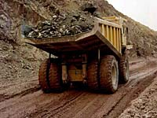
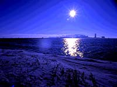

|
 The total capital investment by the mining industry to date is in excess of 4 billion dollars. Much of this amount has been invested in the form of construction, machinery and equipment. Other expenditures include the transportation of mineral products within Saskatchewan and goods and services. Mining accounts for 11% of the gross domestic product in the province. That means $2000 for every person in Saskatchewan is a result of mining activity. Saskatchewan receives a substantial amount in taxes from the mining industry. |
Miners help Saskatchewan in that the companies donate monies to the operation of community organizations, operation of facilities and other worthy causes. Mining employees have freely volunteered their time to operate company equipment on projects undertaken by the community for mutual benefit of all. They bring a variety of skills to their towns which contribute to all aspects of community life. They serve on municipal councils, school boards and recreation boards. Many are leaders in fundraising, sports, educational, charitable and business activities. They conduct mine tours for teachers and the public and give demonstrations to students of the operation of equipment donated to technical and secondary schools. Even more important is the impact on the quality of life in small communities. Miners and their families become involved in the towns in which they live and work. They are active, energetic citizens who are concerned with the quality of life in their community. Miners' dollars are spent in local grocery, clothing, and hardware and furniture stores. Their families fill the schools and churches, and their involvement makes their communities better and more prosperous places for Canadians to live.  The total capital investment by the mining industry to date is in excess of 4 billion dollars. Much of this amount has been invested in the form of construction, machinery and equipment. Other expenditures include the transportation of mineral products within Saskatchewan and goods and services. Mining accounts for 11% of the gross domestic product in the province. That means $2000 for every person in Saskatchewan is a result of mining activity. Saskatchewan receives a substantial amount in taxes from the mining industry. |